In this section we will give the plan for the proof of Theorem 1.1.
The idea of the proof is really quite simple. We will in fact construct
a family of divergence free, smooth solutions
 to (1.8)
parameterized by a number
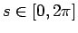. We will use simple ideas
from algebraic topology to show that there exists
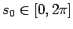 such that
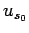 provides an example to prove Theorem 1.1.
to (1.8)
parameterized by a number
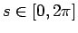. We will use simple ideas
from algebraic topology to show that there exists
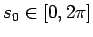 such that
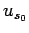 provides an example to prove Theorem 1.1.
In fact all of the solutions we construct will be axisymmetric, indeed, when written in cylindrical coordinates, they have the form: 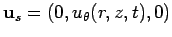. We will prove that there exists and 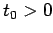 such that the Jacobian 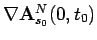 is non-invertible. To this end we have the following representation result.
The proof of Theorem 1.1 will proceed as follows.
For each
, we will construct
 . The Theorem
will be proved if we can show the existence of
and such that
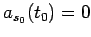. We will assume the opposite,
and give a proof by contradiction.
. The Theorem
will be proved if we can show the existence of
and such that
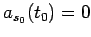. We will assume the opposite,
and give a proof by contradiction.
We will need some simple facts from algebraic
topology. We refer the reader to [8] for more details.
Let us consider the collection of continuous functions
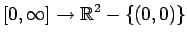 which map  and 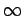 to 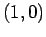.
We will say two such functions 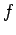 and
and 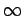 to 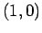.
We will say two such functions 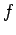 and  are homotopic with base point (or simply homotopic)
if there exists a jointly continuous
function
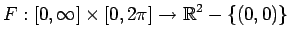 such that
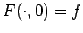,
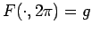 and
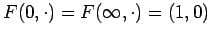. We will call the function
are homotopic with base point (or simply homotopic)
if there exists a jointly continuous
function
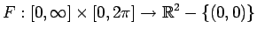 such that
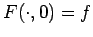,
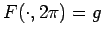 and
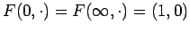. We will call the function  a homotopy. Clearly being homotopic is an
equivalence relation.
a homotopy. Clearly being homotopic is an
equivalence relation.
It is well known that a constant map
 , and a map with ``winding number 1'', for example,
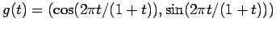 are not homotopic.
(Since
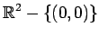 is homotopy equivalent to the unit circle,
this is basically saying that the fundamental group of the unit circle
is non-trivial.)
, and a map with ``winding number 1'', for example,
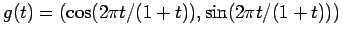 are not homotopic.
(Since
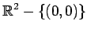 is homotopy equivalent to the unit circle,
this is basically saying that the fundamental group of the unit circle
is non-trivial.)
In order to provide our contradiction we will prove the following result.